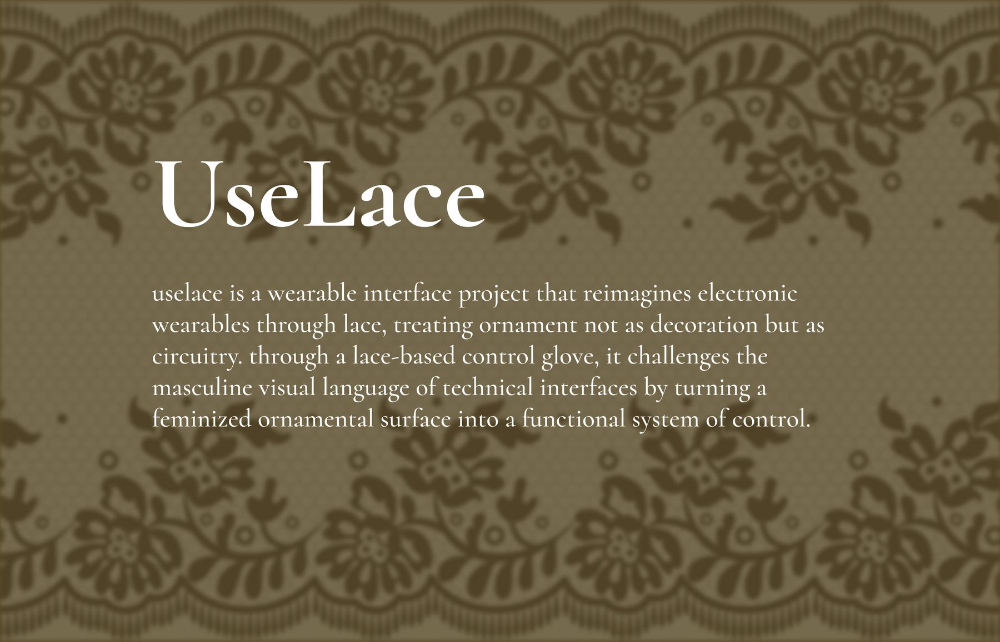
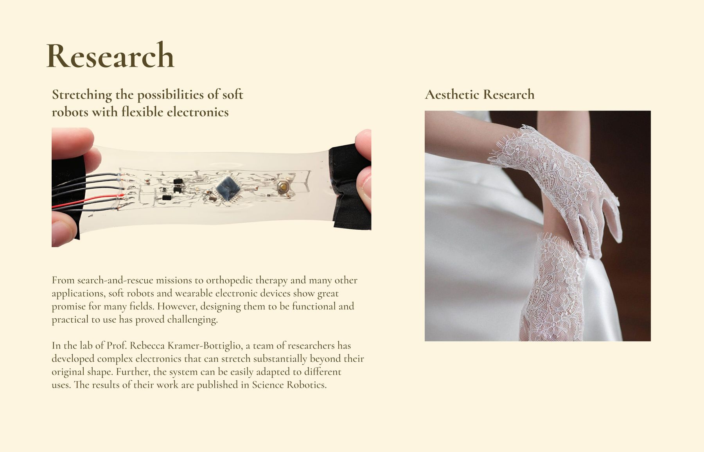
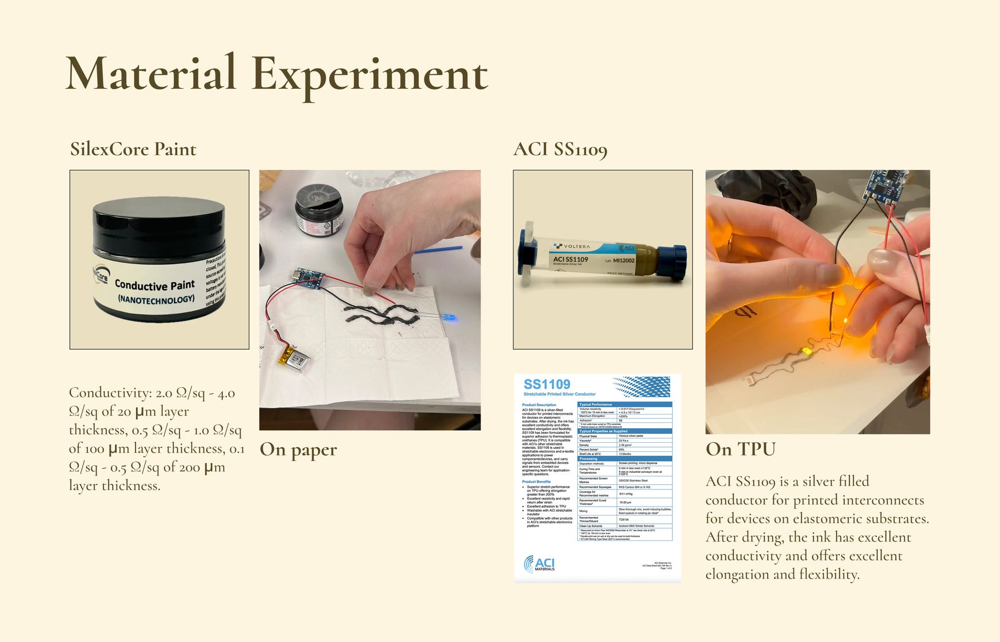
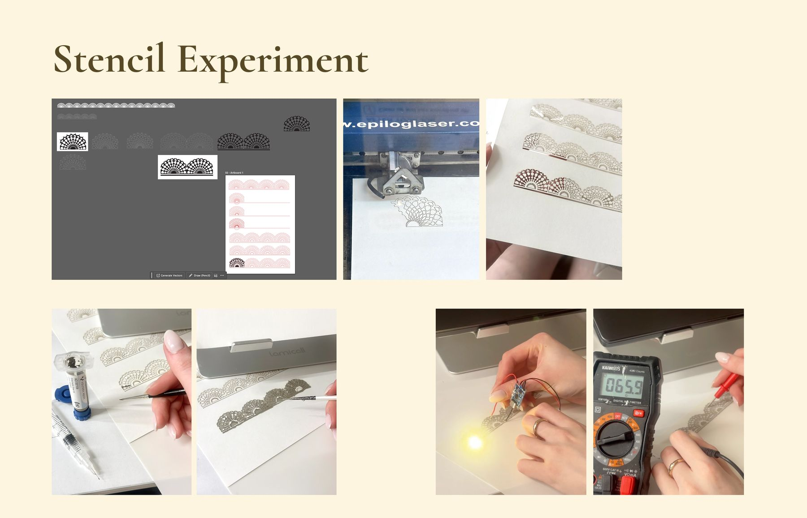
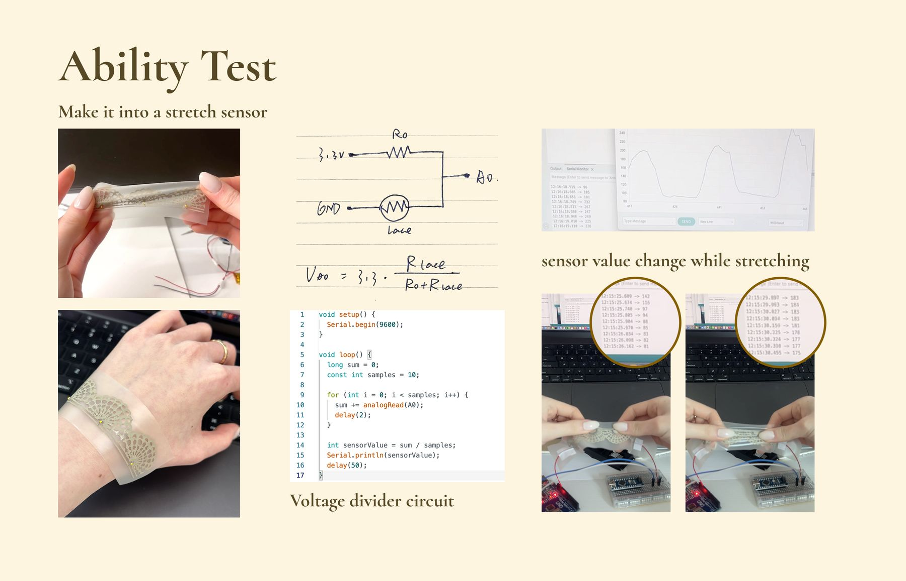
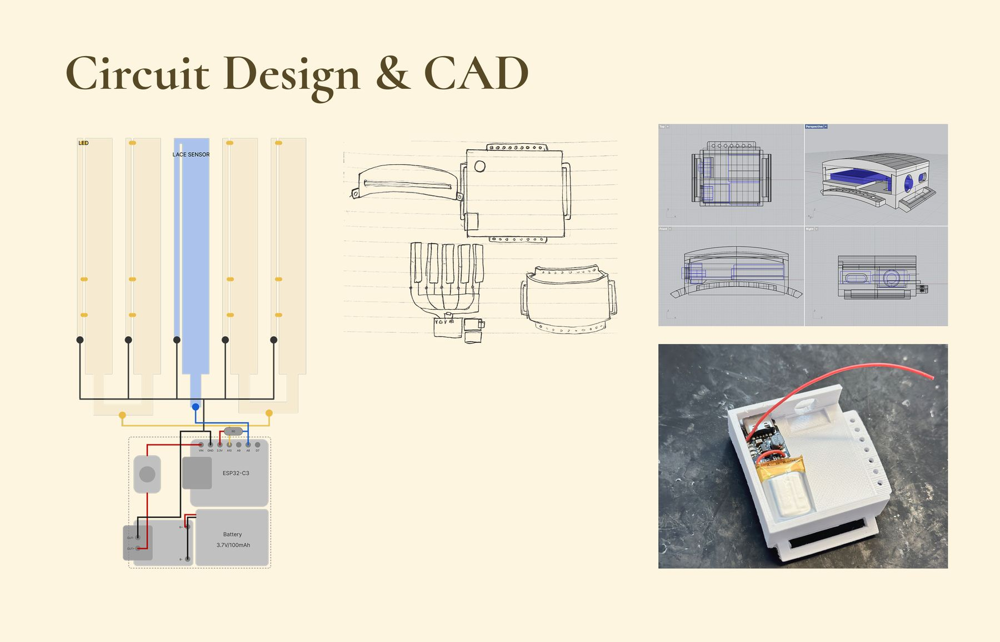
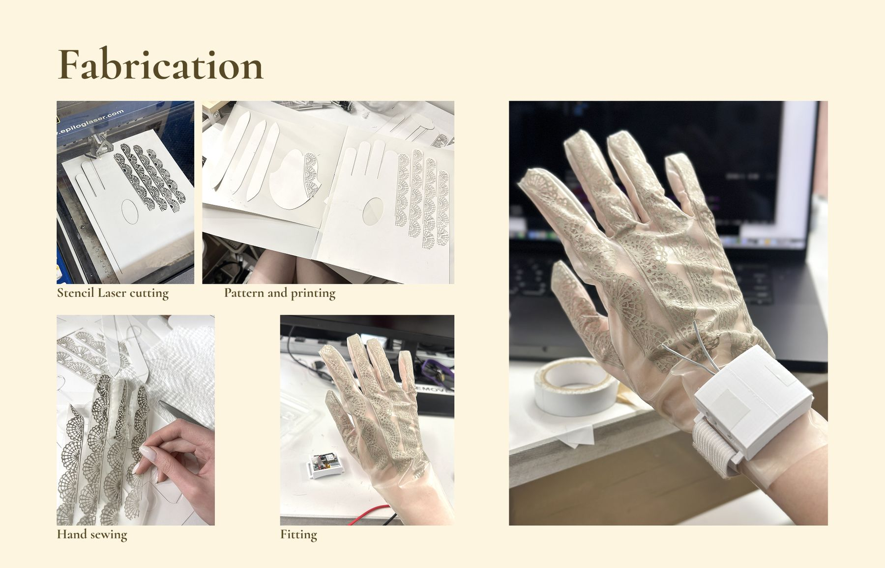
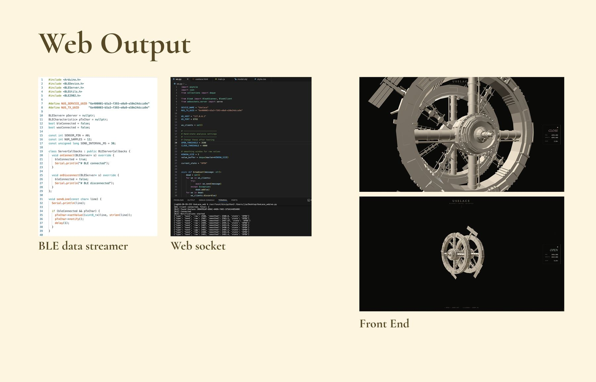
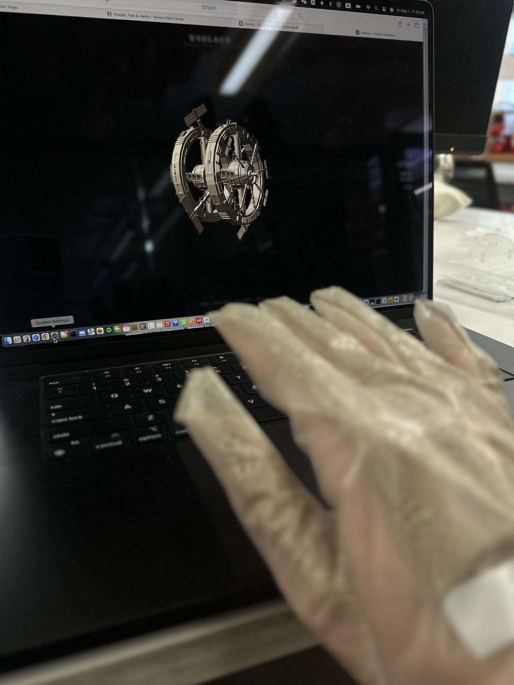
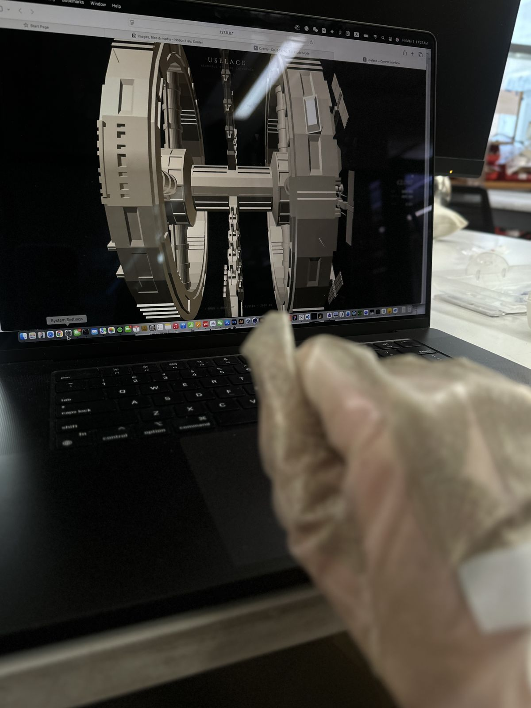

Case studyPlate II · Wearable · 2026
UseLace
A wearable interface that treats lace not as decoration but as circuitry. Hand gestures in a lace glove steer a 3D model in the browser.

- Type
- Wearable interface
- Materials
- SilexCore conductive paint, ACI SS1109 silver ink, TPU, lace stencils
- Hardware
- ESP32-C3, printed lace stretch sensors, 3.7 V battery
- Software
- BLE data streamer, WebSocket, Three.js front end
Concept
Ornament as circuitryUseLace is a wearable interface project that reimagines electronic wearables through lace, treating ornament not as decoration but as circuitry.
Through a lace-based control glove, it challenges the masculine visual language of technical interfaces by turning a feminized ornamental surface into a functional system of control.
Research
Soft and stretchableTwo lines of research ran side by side. The technical one: stretchable electronics. From search-and-rescue missions to orthopedic therapy, soft robots and wearable electronic devices show great promise, but making them functional and practical has proved challenging. In the lab of Prof. Rebecca Kramer-Bottiglio, researchers developed electronics that stretch substantially beyond their original shape, published in Science Robotics.
The aesthetic one: the lace glove itself, and how much of a hand it can cover while still reading as ornament.


Material experiment
Conductive inksTwo conductive materials were tested. SilexCore paint, on paper, with a conductivity of 2.0–4.0 Ω/sq at 20 µm layer thickness, 0.5–1.0 Ω/sq at 100 µm and 0.1–0.5 Ω/sq at 200 µm.
ACI SS1109, on TPU: a silver-filled conductor for printed interconnects on elastomeric substrates. After drying, the ink has excellent conductivity, elongation and flexibility.


Stencil experiment
Printing laceLace patterns were drawn as stencils, laser cut, and the ink printed through them. Each print was checked with an LED and a multimeter before moving on.


Ability test
Lace as a stretch sensorThe printed lace became a stretch sensor. Read through a voltage divider, its value changes as the lace stretches with the hand, which turns each band into a control.


Circuit design and CAD
Five lace sensors run down the fingers to an ESP32-C3 at the wrist, powered by a 3.7 V, 100 mAh battery. The wrist case was sketched, modelled and printed to hold the board and battery.


Fabrication
Stencils laser cut, pattern printed, then the lace hand-sewn into the glove and fitted on the hand.


Web output
BLE to browserThe glove streams its sensor values over BLE. A WebSocket passes them to the browser, where the front end turns each gesture into movement of a 3D model.


Presentation

